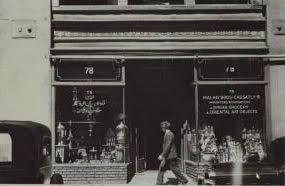
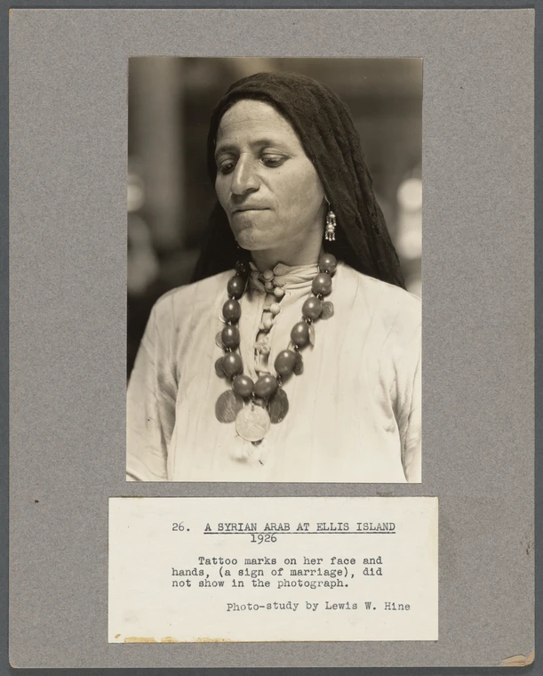
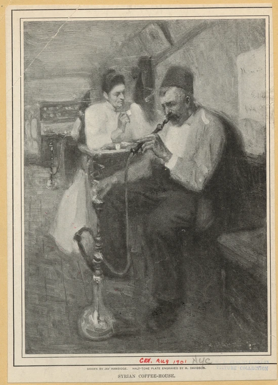
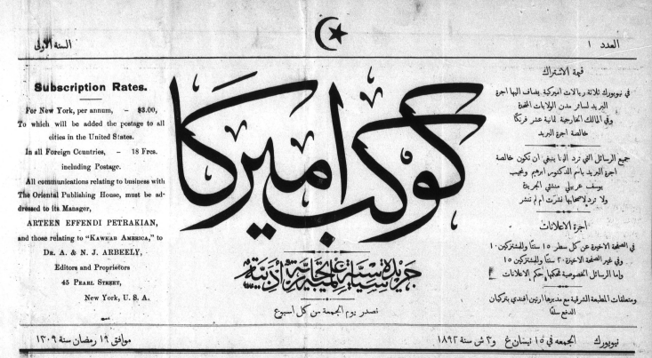
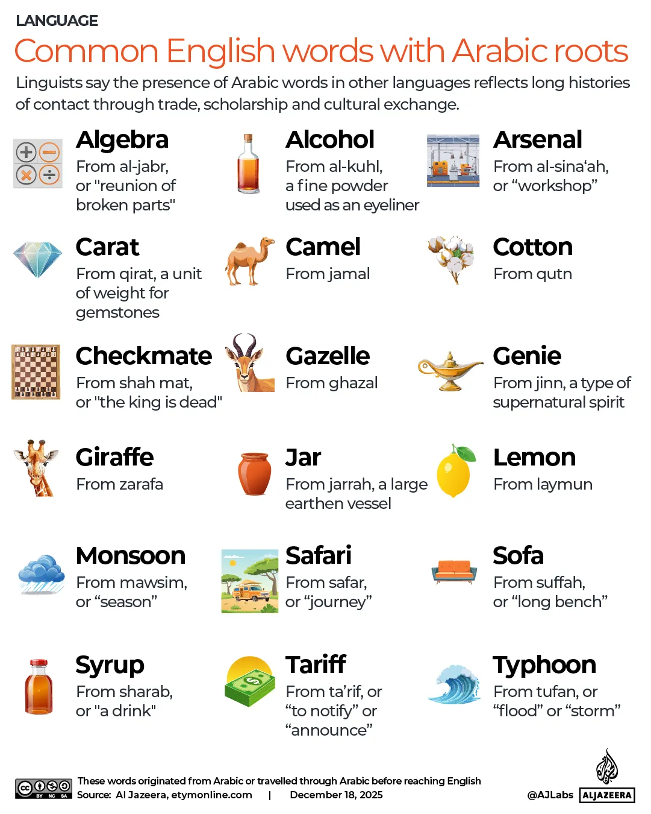
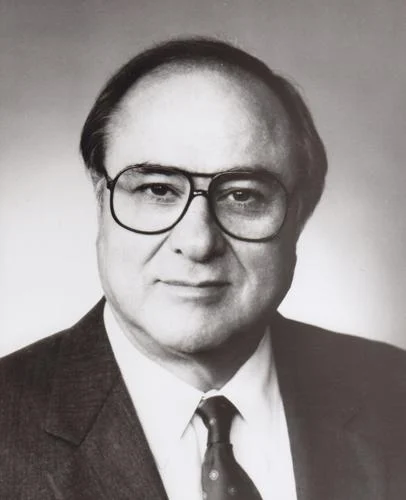
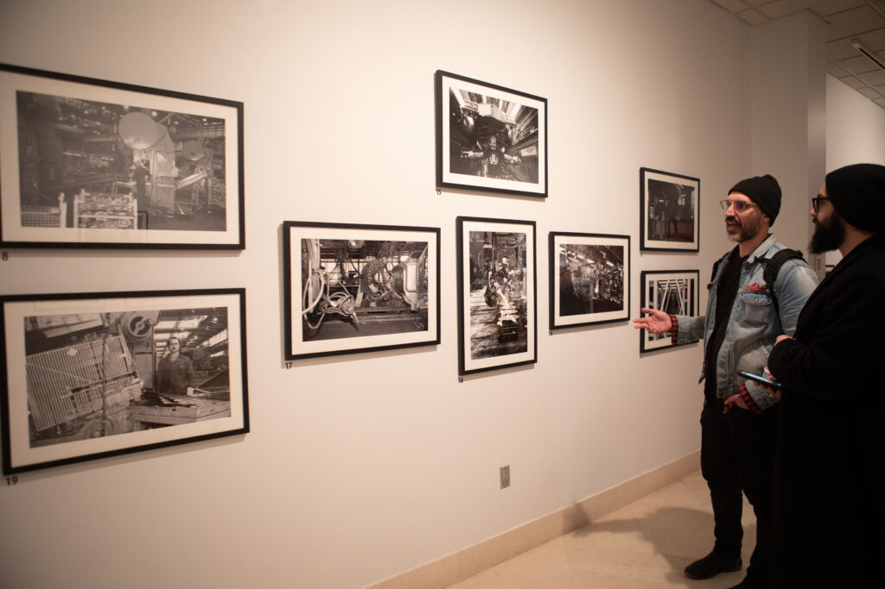
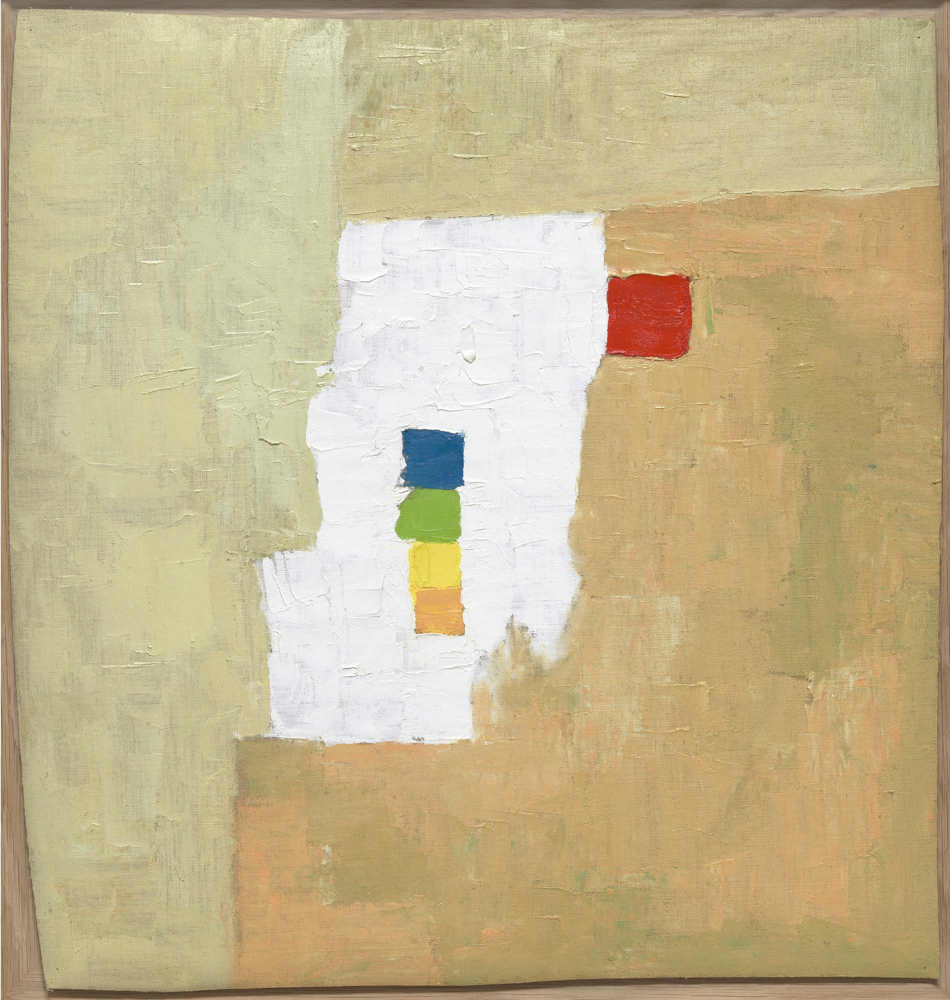
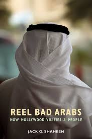
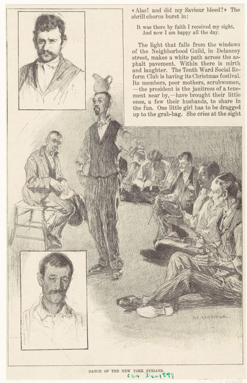

ESSENTIAL QUESTIONHow have Arab Americans built community, institutions, and power while challenging stereotypes and discrimination?
Inside the Arab American National Museum, students can walk past images, documents, art, and stories that many textbooks once ignored. A museum like this is not just a building. It is a public argument that Arab American history belongs in American history. The lesson begins there because Ethnic Studies asks who gets remembered, who gets misrepresented, and who gets to tell the story. Arab Americans have answered those questions by building institutions of their own.
Inside the Arab American National Museum, students can see images, documents, art, and stories that many textbooks once ignored. A museum like this is not just a building. It says Arab American history belongs in American history. Ethnic Studies asks who gets remembered and who gets to tell the story. Arab Americans have answered by building institutions of their own.

Syrian Grocery at 78 Washington Street, New York City, 1929. A small storefront could also be a community institution. New York Public Library.
A second sign shows why those institutions mattered. After September 11, 2001, Adel Kamal walked past a Dearborn barbershop and saw the words, "We don't serve Arabs." His family had lived in Michigan for generations. The sign tried to shrink a whole community into a suspect. This lesson follows both kinds of evidence: the places Arab Americans built, and the stereotypes and policies they had to challenge.
A second sign shows why those institutions mattered. After September 11, 2001, Adel Kamal saw a sign in a Dearborn barbershop. It said, "We don't serve Arabs." His family had lived in Michigan for generations. The sign treated a whole community like suspects. This lesson studies what Arab Americans built and what they had to challenge.
SECTION ONE
ARRIVAL AND MIGRATION

A Syrian Arab at Ellis Island, 1926. Immigration stations were places where newcomers were inspected, recorded, and sorted by officials. NYPL Digital Collections.
The first large wave of Arab immigrationMoving from one country to another to live there permanently. began in the 1880s. Many early arrivals came from Greater Syria, a region that included modern Lebanon, Syria, Palestine, and Jordan. Most were Christian, though Arab Americans have always included many religions. Some left because of poverty, political pressure, or military service under the Ottoman Empire. Many planned to work for a few years and return, but many stayed and built American neighborhoods.
The first large wave of Arab immigration began in the 1880s. Many early arrivals came from Greater Syria. That region included modern Lebanon, Syria, Palestine, and Jordan. Most were Christian, though Arab Americans have always included many religions. Some left because of poverty, political pressure, or military service. Many stayed and built new neighborhoods.
That early story is important, but it is not the whole story. Later Arab American communities included Palestinians, Yemenis, Egyptians, Iraqis, Moroccans, Sudanese, and many others. After 1965, U.S. immigration law allowed more people from outside Europe to enter. War, labor, education, family ties, and refugee resettlement all shaped later migration. Arab America became more religiously, nationally, and politically diverse over time.
That early story matters, but it is not the whole story. Later Arab American communities included Palestinians, Yemenis, Egyptians, Iraqis, Moroccans, Sudanese, and many others. After 1965, U.S. immigration law changed. More people from outside Europe could enter. War, work, school, family, and refugee resettlement shaped later migration.
SECTION TWO
INSTITUTIONS AND COMMUNITY LIFE

Syrian Coffee-House, New York, 1901. Coffeehouses could be places to hear news, debate politics, find work, and stay connected. NYPL Digital Collections.
Arab immigrants did not only bring customs. They built institutions. A coffee-house could be a news center, a debate room, a job network, and a place to hear familiar language. A grocery store could connect families to food, letters, credit, and information. Churches, mosques, mutual aid societies, student clubs, newspapers, and later museums helped people solve problems together. These institutions made community life possible.
Arab immigrants did not only bring customs. They built institutions. A coffee-house could be a news center, debate room, job network, and place to hear familiar language. A grocery store could connect families to food, letters, credit, and information. Churches, mosques, aid groups, student clubs, newspapers, and museums helped people solve problems together.

Kawkab Amirka, also known as Kawkab America, was the first Arabic-language newspaper published in the United States. It began in New York in 1892. Wikimedia Commons.
A newspaper may not look exciting at first, but it was powerful. Kawkab Amirka let immigrants read about politics, jobs, health scares, business openings, and news from across the ocean in Arabic. It helped people debate what it meant to be Syrian, Arab, Ottoman, Christian, immigrant, and American at the same time. A newspaper built public life. It let a community speak to itself instead of waiting for outsiders to explain it.
A newspaper may not look exciting at first, but it was powerful. Kawkab Amirka let immigrants read news in Arabic. It shared information about politics, jobs, health, business, and events overseas. It helped people debate who they were. A newspaper built public life. It let a community speak for itself.
DID YOU KNOW

Teacher-created word graphic: English words with Arabic roots.
You already use Arabic more than you think. Words like algebra, coffee, sugar, zero, sofa, magazine, and safari entered English through Arabic or through trade networks shaped by Arabic-speaking scholars and merchants. Part of Arab history is hiding in your everyday vocabulary.
SECTION THREE
STEREOTYPES, POLICY, AND POWER

James Abourezk, first Arab American U.S. senator and founder of the Arab American Anti-Discrimination Committee. Wikimedia Commons / Biographical Directory of Congress.
Arab Americans built institutions because institutions protect people when public opinion turns hostile. In 1980, James Abourezk, a Lebanese American former U.S. senator from South Dakota, founded the Arab American Anti-Discrimination CommitteeA civil rights group founded in 1980 to defend Arab Americans from discrimination.. The group challenged discrimination in schools, workplaces, media, and government. It also helped Arab Americans answer stereotypes with legal action, education, and public pressure. That work mattered because images in media often shaped how people treated real communities.
Arab Americans built institutions because institutions protect people when public opinion turns hostile. In 1980, James Abourezk founded the Arab American Anti-Discrimination Committee. He was a Lebanese American former U.S. senator from South Dakota. The group fought discrimination in schools, jobs, media, and government. It helped Arab Americans answer stereotypes with law, education, and public pressure.
After September 11, the pressure became intense. The government launched Special Registration, a program that required men from many Arab and Muslim-majority countries to check in with immigration officials. Thousands were questioned, detained, or deported. Hate crimes rose, and many families worried about speaking Arabic in public or being stopped at airports. Arab American groups responded with lawsuits, protests, voter registration drives, public education, and coalitionDifferent groups working together toward a shared goal. building with other targeted communities.
After September 11, pressure on Arab Americans became intense. The government required many men from Arab and Muslim-majority countries to register with immigration officials. Thousands were questioned, detained, or deported. Hate crimes rose. Many families worried about speaking Arabic in public or being stopped at airports. Arab American groups responded with lawsuits, protests, voter drives, and public education.
FAST FACTS
ARAB AMERICA IS LARGER, OLDER, AND MORE DIVERSE THAN MANY PEOPLE THINK
3.7MArab Americans live in the United States today, a community larger than the population of many U.S. states
140+years since the first major Arab immigration wave began in the 1880s, long before September 11
1892the year Kawkab Amirka began publishing in New York, showing that Arab American public life is more than a century old
1000+films Jack Shaheen studied while documenting repeated Arab stereotypes in Hollywood
SECTION FOUR
ARAB AMERICA TODAY

Tony Maine photographed Yemeni and Lebanese American life in Dearborn's Southend during the 1960s, 1970s, and 1980s. Arab American National Museum.
Arab American life today is not one story. It includes Lebanese, Syrian, Palestinian, Egyptian, Iraqi, Yemeni, Moroccan, Sudanese, and many other communities. It includes Christians, Muslims, Druze, Jews, secular people, and more. Some families have lived in the United States for generations. Others arrived recently as immigrants or refugeesPeople forced to leave home because it is unsafe to return.. That diversity matters because stereotypes often pretend all Arab Americans are the same.
Arab American life today is not one story. It includes people with roots in Lebanon, Syria, Palestine, Egypt, Iraq, Yemen, Morocco, Sudan, and other places. It includes Christians, Muslims, Druze, Jews, secular people, and more. Some families have lived in the United States for generations. Others arrived recently as immigrants or refugees. That diversity matters because stereotypes often pretend everyone is the same.
MEDIA POWER
Comedians, filmmakers, poets, and journalists challenge stereotypes by telling Arab American stories from inside the community.
CIVIC POWER
Arab American voters, student groups, business owners, and local leaders shape schools, cities, elections, and national debates.
Arab Americans have shaped mainstream culture, but culture is not only entertainment. It is also a way communities explain themselves. Comedians and actors such as Ramy Youssef use TV and stand-up to show Arab American and Muslim American family life from the inside. Writers, poets, filmmakers, and journalists make Arab American life visible on their own terms. These forms of culture matter because representation is part of power.
Arab Americans have shaped mainstream culture, but culture is not only entertainment. It is also a way communities explain themselves. Comedians and actors such as Ramy Youssef show Arab American and Muslim American family life from the inside. Writers, poets, filmmakers, and journalists make Arab American life visible. These forms of culture matter because representation is part of power.
ART SPOTLIGHT

Untitled | Etel Adnan, 1965 This leporello by Lebanese American artist Etel Adnan combines watercolor, abstract marks, and poem text in an accordion-fold book that unfolds like a landscape.
Adnan grew up in Beirut writing in French because Arabic had been pushed out of her schooling by colonial rule. Later, she made art in the United States, France, and Lebanon. In some works, she moved away from words and let color carry memory instead. Her art shows identity as layered: Arab, American, Lebanese, French-speaking, English-writing, and still unfinished.
PRIMARY SOURCE MOMENT

Jack Shaheen's work in Reel Bad Arabs challenged repeated stereotypes in American film and television. Media Education Foundation.
"We inherited the Arab image primarily from Europeans in the early days... the travel writers, the artists who fabricated these images... And these images were transmitted and inherited by us. We took them, we embellished them, and as a result we now have a kind of reservoir of images that are false."
Jack G. Shaheen, Reel Bad Arabs: How Hollywood Vilifies a People, documentary transcript, 2006
WHY THIS MATTERS: Shaheen argues that stereotypes do not appear from nowhere. They are repeated, inherited, and made to feel normal. His source helps students see media as evidence of power, not just entertainment.
THEN AND NOW
ARAB AMERICAN HISTORY IS NOT ONE ORIGIN STORY. IT IS A STORY OF MANY COMMUNITIES BUILDING INSTITUTIONS, MEMORY, AND POWER.
EARLY 1900S

Dance of the New York Syrians. Early Arab American public culture in New York without repeating the grocery or coffee-house image. NYPL Digital Collections.
NOW
First Floor Gallery at the Arab American National Museum in Dearborn. A museum turns community memory into public history. Wikimedia Commons, CC BY-SA 4.0.
THEN
Early Arab immigrants built stores, newspapers, churches, coffeehouses, and mutual aid networks because communities need institutions to survive. New York's Little Syria shows one early chapter of Arab American life, not the whole story. These communities were not temporary guests. They were building American neighborhoods.
NOW
Today Arab Americans continue building institutions through civil rights groups, media projects, businesses, schools, elections, art, and museums. The Arab American National Museum exists because a community insisted its history belonged in public. Arab American history continues through many communities, not only one city or one national background.
CONNECTION
The connection between then and now is community power. Earlier generations created institutions so people could survive, communicate, and belong. Today, Arab Americans continue that work through culture, voting, organizing, art, and public history. Their history shows that American identity is built by communities that create institutions and insist on telling their own stories.
Which institution in this lesson seems most powerful: the coffee-house, the store, the newspaper, the civil rights group, the artwork, or the museum?